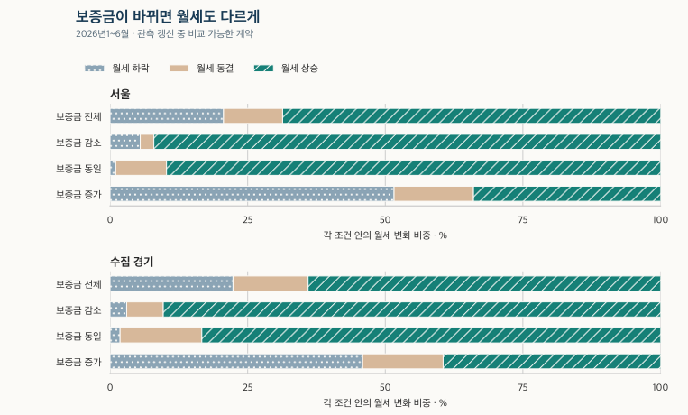
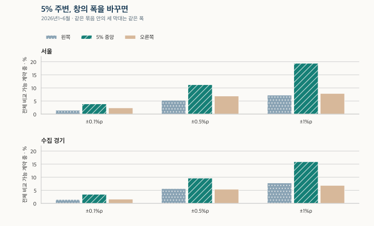

전세와 월세 · 갱신 월세와 보증금
월세 갱신 인상률, 보증금이 바뀌면 어떻게 달라질까?
서울·수집 경기 아파트의 월세 갱신 인상률을 보증금 감소·동일·증가와 같은 상반기·면적별로 비교합니다. 5% 주변 분포, 종전 금액의 눈금, 권리 기재와 법적 판단의 차이를 확인하세요.
분석 기간 · 2021.6~2026.6 · 최근 3개월 잠정 | 자료 기준일 · 2026-10-03 · 과거 수집일 미상 포함
월세 재계약에서 얼마를 더 내게 됐는지 보려면 월세와 보증금의 변화를 함께 봐야 합니다. 2026년 상반기 서울의 비교 가능한 아파트 갱신 계약에서는 월세가 오른 비중이 68.6%입니다. 보증금이 그대로인 계약만 보면 89.7%, 보증금이 늘어난 계약에서는 34.0%로 달라집니다. 같은 기간의 수집 경기와 표준 면적을 나란히 비교하고, 5% 주변의 숫자도 살펴보겠습니다.
어떤 계약의 월세 인상률을 계산했나요?
자료에 갱신으로 적혀 있고 현재와 종전 월세가 모두 양수인 아파트 계약을 비교했습니다. 종전 보증금과 현재 보증금도 확인돼야 합니다. 권리 사용이 기재된 갱신과 사용 여부가 비어 있는 갱신을 함께 포함하되, 신규나 계약 구분이 불명확한 기록은 이 분포의 분모에 넣지 않습니다.
계산은 (현재 월세−종전 월세)÷종전 월세×100입니다. 가상 예시로 월세가 80만 원에서 84만 원이 됐다면 5%입니다. 계약기간이 1년인지 2년인지로 나눠 연율화하지 않습니다. 종전 월세가 0인 전세에서 월세로 바뀐 계약은 이 식으로 인상률을 계산할 수 없습니다.
종전 금액의 빈칸은 0으로 바꾸지 않습니다. 서로 다른 종전 금액이 함께 남은 기록과 계약기간이 충돌한 기록도 기본 비교에서 제외했습니다. 이 때문에 ‘자료에 있는 모든 갱신’보다 ‘변화율을 비교할 수 있는 갱신’의 분모가 작습니다.
보증금 방향에 따라 월세 변화는 얼마나 다를까요?
2026년 1~6월, 비교 가능한 계약은 서울 21,272건·수집 경기 24,080건입니다. 두 지역 모두 보증금 감소와 동일 조건에서 월세 상승 비중이 높고, 보증금 증가 조건에서는 낮습니다. 보증금 방향을 섞은 전체 비중만으로 자신의 재계약 제안을 판단하기 어려운 이유입니다.
| 지역 | 기간 | 보증금 조건 | 비교 가능(건) | 월세 하락 | 월세 동결 | 월세 상승 |
|---|---|---|---|---|---|---|
| 서울 | 2026년 1~6월 | 보증금 전체 | 21,272 | 20.6% | 10.7% | 68.6% |
| 서울 | 2026년 1~6월 | 보증금 감소 | 1,496 | 5.5% | 2.5% | 92.0% |
| 서울 | 2026년 1~6월 | 보증금 동일 | 11,667 | 1.0% | 9.2% | 89.7% |
| 서울 | 2026년 1~6월 | 보증금 증가 | 8,109 | 51.6% | 14.4% | 34.0% |
| 수집 경기 | 2026년 1~6월 | 보증금 전체 | 24,080 | 22.3% | 13.6% | 64.0% |
| 수집 경기 | 2026년 1~6월 | 보증금 감소 | 3,219 | 3.0% | 6.6% | 90.3% |
| 수집 경기 | 2026년 1~6월 | 보증금 동일 | 9,739 | 1.8% | 14.8% | 83.3% |
| 수집 경기 | 2026년 1~6월 | 보증금 증가 | 11,122 | 45.9% | 14.6% | 39.5% |
수집 경기의 월세 상승 비중은 전체 64.0%, 보증금 동일 83.3%, 보증금 증가 39.5%입니다. 보증금이 감소한 계약의 상승 비중은 서울 92.0%·수집 경기 90.3%입니다. 다만 서로 다른 계약을 나눈 비교이므로 보증금을 더 맡기면 이 비율만큼 월세가 내려간다는 효과로 해석하지 않습니다.

보증금 증액분에는 자금의 기회비용이나 대출이자가 따를 수 있습니다. 표의 월세 하락을 총부담 감소로 바꾸려면 그 비용과 실제 계약조건을 더 확인해야 합니다. 두 보증금·월세 제안의 전환율 계산은 다른 두 조건을 비교하는 별도의 계산을 설명합니다.
몇 % 올랐는지와 오른 계약이 몇 %인지는 다릅니다
‘월세 상승 비중 68.6%’는 월세가 68.6% 올랐다는 뜻이 아닙니다. 계약별 변화율을 하락·동결·상승 구간으로 나눠 센 비중입니다. 정확히 5%인 계약은 따로 구분하고, 10%를 넘는 변화도 잘라내지 않았습니다. 구간 폭이 서로 다르므로 아래 비중의 크기를 그대로 분포의 밀도로 읽지 않습니다.
2021~2026년 및 전체 기간의 8개 변화율 구간
| 기간 | 지역 | 비교 가능(건) | 하락 | 동결 | 0% 초과 4% 이하 | 4% 초과 5% 미만 | 정확 5% | 5% 초과 6% 이하 | 6% 초과 10% 이하 | 10% 초과 |
|---|---|---|---|---|---|---|---|---|---|---|
| 2021년 6~12월 | 서울 | 8,237 | 4.7% | 17.6% | 2.9% | 4.8% | 9.0% | 15.5% | 17.4% | 28.0% |
| 2021년 6~12월 | 수집 경기 | 12,497 | 37.2% | 14.7% | 5.2% | 4.5% | 6.0% | 8.8% | 6.9% | 16.7% |
| 2022년 | 서울 | 21,821 | 5.8% | 17.3% | 7.1% | 4.5% | 6.6% | 12.0% | 14.6% | 32.1% |
| 2022년 | 수집 경기 | 29,240 | 32.9% | 13.6% | 2.8% | 4.0% | 5.3% | 8.6% | 8.6% | 24.2% |
| 2023년 | 서울 | 19,608 | 23.1% | 17.1% | 6.2% | 3.7% | 2.1% | 6.7% | 9.5% | 31.6% |
| 2023년 | 수집 경기 | 35,668 | 35.7% | 17.6% | 2.7% | 3.5% | 1.3% | 3.5% | 6.7% | 29.0% |
| 2024년 | 서울 | 24,944 | 13.0% | 18.6% | 12.0% | 4.9% | 2.6% | 7.4% | 12.0% | 29.5% |
| 2024년 | 수집 경기 | 48,525 | 35.8% | 17.3% | 7.3% | 3.3% | 1.2% | 3.6% | 6.9% | 24.5% |
| 2025년 | 서울 | 31,048 | 6.4% | 15.5% | 9.9% | 5.5% | 4.5% | 9.9% | 16.7% | 31.5% |
| 2025년 | 수집 경기 | 53,010 | 27.5% | 16.0% | 7.8% | 4.2% | 2.9% | 6.5% | 10.2% | 25.0% |
| 2025년 1~6월 | 서울 | 15,657 | 6.8% | 16.2% | 10.4% | 5.6% | 4.4% | 9.8% | 15.9% | 30.9% |
| 2025년 1~6월 | 수집 경기 | 25,716 | 30.9% | 16.6% | 7.4% | 4.0% | 2.6% | 5.7% | 9.5% | 23.2% |
| 2026년 1~6월 | 서울 | 21,272 | 20.6% | 10.7% | 8.4% | 5.9% | 3.5% | 9.3% | 13.2% | 28.4% |
| 2026년 1~6월 | 수집 경기 | 24,080 | 22.3% | 13.6% | 10.4% | 5.2% | 3.2% | 6.8% | 11.8% | 26.6% |
| 2026년 7~9월 · 잠정 | 서울 | 8,841 | 16.9% | 13.3% | 12.4% | 6.7% | 3.6% | 7.5% | 11.3% | 28.3% |
| 2026년 7~9월 · 잠정 | 수집 경기 | 10,294 | 20.0% | 12.6% | 9.2% | 5.3% | 3.9% | 7.2% | 14.5% | 27.2% |
| 2021년 6월~2026년 6월 | 서울 | 126,930 | 12.5% | 16.0% | 8.6% | 5.0% | 4.2% | 9.6% | 13.8% | 30.5% |
| 2021년 6월~2026년 6월 | 수집 경기 | 203,020 | 31.7% | 15.9% | 6.2% | 4.0% | 2.8% | 5.8% | 8.5% | 25.1% |
2021년은 6~12월, 2026년 1~6월은 상반기이며, 2026년 7~9월은 잠정입니다. 기간 길이가 다른 건수를 같은 연간 증감률로 비교하지 않습니다. 2025년과 2026년은 같은 1~6월을 맞추고 보증금 방향도 함께 봅니다.
같은 두 상반기의 보증금 방향별 하락·동결·상승
| 지역 | 기간 | 보증금 조건 | 비교 가능(건) | 월세 하락 | 월세 동결 | 월세 상승 |
|---|---|---|---|---|---|---|
| 서울 | 2025년 1~6월 | 보증금 전체 | 15,657 | 6.8% | 16.2% | 77.0% |
| 서울 | 2025년 1~6월 | 보증금 감소 | 695 | 5.2% | 7.3% | 87.5% |
| 서울 | 2025년 1~6월 | 보증금 동일 | 10,573 | 1.3% | 11.7% | 87.0% |
| 서울 | 2025년 1~6월 | 보증금 증가 | 4,389 | 20.4% | 28.4% | 51.3% |
| 서울 | 2026년 1~6월 | 보증금 전체 | 21,272 | 20.6% | 10.7% | 68.6% |
| 서울 | 2026년 1~6월 | 보증금 감소 | 1,496 | 5.5% | 2.5% | 92.0% |
| 서울 | 2026년 1~6월 | 보증금 동일 | 11,667 | 1.0% | 9.2% | 89.7% |
| 서울 | 2026년 1~6월 | 보증금 증가 | 8,109 | 51.6% | 14.4% | 34.0% |
| 수집 경기 | 2025년 1~6월 | 보증금 전체 | 25,716 | 30.9% | 16.6% | 52.5% |
| 수집 경기 | 2025년 1~6월 | 보증금 감소 | 4,022 | 5.4% | 9.1% | 85.6% |
| 수집 경기 | 2025년 1~6월 | 보증금 동일 | 9,760 | 6.3% | 21.3% | 72.4% |
| 수집 경기 | 2025년 1~6월 | 보증금 증가 | 11,934 | 59.6% | 15.3% | 25.1% |
| 수집 경기 | 2026년 1~6월 | 보증금 전체 | 24,080 | 22.3% | 13.6% | 64.0% |
| 수집 경기 | 2026년 1~6월 | 보증금 감소 | 3,219 | 3.0% | 6.6% | 90.3% |
| 수집 경기 | 2026년 1~6월 | 보증금 동일 | 9,739 | 1.8% | 14.8% | 83.3% |
| 수집 경기 | 2026년 1~6월 | 보증금 증가 | 11,122 | 45.9% | 14.6% | 39.5% |
정확히 5%인 비중은 서울에서 2025년 상반기 4.4%→2026년 상반기 3.5%, 수집 경기에서는 2.6%→3.2%입니다. 같은 기간에도 두 지역의 방향이 다릅니다. 기재된 계약의 구성과 금액 눈금이 달라질 수 있어, 이 변화만으로 협상 관행이나 제도의 효과를 단정하지 않습니다.
전체 주기간의 보증금 감소·동일·증가별 8구간
| 지역 | 보증금 조건 | 비교 가능(건) | 하락 | 동결 | 0% 초과 4% 이하 | 4% 초과 5% 미만 | 정확 5% | 5% 초과 6% 이하 | 6% 초과 10% 이하 | 10% 초과 |
|---|---|---|---|---|---|---|---|---|---|---|
| 서울 | 보증금 감소 | 7,135 | 9.7% | 10.9% | 1.6% | 0.6% | 0.4% | 1.1% | 5.4% | 70.4% |
| 서울 | 보증금 동일 | 84,644 | 5.6% | 12.9% | 9.0% | 5.6% | 4.0% | 12.0% | 17.7% | 33.2% |
| 서울 | 보증금 증가 | 35,151 | 29.6% | 24.4% | 9.0% | 4.2% | 5.6% | 5.4% | 6.0% | 15.8% |
| 수집 경기 | 보증금 감소 | 28,706 | 3.8% | 8.8% | 1.8% | 0.6% | 0.5% | 1.0% | 4.0% | 79.6% |
| 수집 경기 | 보증금 동일 | 81,252 | 5.0% | 22.4% | 10.4% | 6.4% | 5.0% | 10.9% | 14.3% | 25.6% |
| 수집 경기 | 보증금 증가 | 93,062 | 63.7% | 12.4% | 4.0% | 2.9% | 1.6% | 2.7% | 4.9% | 7.9% |
5% 주변의 집중은 구간 폭을 바꿔도 보이나요?
2026년 상반기의 두 지역 전체 표에서는 세 가지 폭 모두 5%를 가운데 둔 구간이 양쪽 이웃 각각보다 많습니다. 예를 들어 서울에서 4.9~5.1%인 계약은 828건이고, 같은 폭의 왼쪽은 312건·오른쪽은 502건입니다. 양쪽 이웃을 합친 구간은 폭이 두 배이므로 그 합과 중앙을 단순 비교하지 않습니다.
| 기간 | 지역 | 반폭 | 왼쪽 범위 | 중앙 범위 | 오른쪽 범위 | 왼쪽(건) | 중앙(건) | 오른쪽(건) | 왼쪽 비중 | 중앙 비중 | 오른쪽 비중 |
|---|---|---|---|---|---|---|---|---|---|---|---|
| 2026년 1~6월 | 서울 | 0.1%p | 4.7~4.9% | 4.9~5.1% | 5.1~5.3% | 312 | 828 | 502 | 1.5% | 3.9% | 2.4% |
| 2026년 1~6월 | 서울 | 0.5%p | 3.5~4.5% | 4.5~5.5% | 5.5~6.5% | 1,124 | 2,390 | 1,469 | 5.3% | 11.2% | 6.9% |
| 2026년 1~6월 | 서울 | 1.0%p | 2.0~4.0% | 4.0~6.0% | 6.0~8.0% | 1,538 | 4,125 | 1,677 | 7.2% | 19.4% | 7.9% |
| 2026년 1~6월 | 수집 경기 | 0.1%p | 4.7~4.9% | 4.9~5.1% | 5.1~5.3% | 358 | 836 | 393 | 1.5% | 3.5% | 1.6% |
| 2026년 1~6월 | 수집 경기 | 0.5%p | 3.5~4.5% | 4.5~5.5% | 5.5~6.5% | 1,357 | 2,319 | 1,305 | 5.6% | 9.6% | 5.4% |
| 2026년 1~6월 | 수집 경기 | 1.0%p | 2.0~4.0% | 4.0~6.0% | 6.0~8.0% | 1,880 | 3,834 | 1,654 | 7.8% | 15.9% | 6.9% |
중앙의 반폭은 0.1·0.5·1%포인트입니다. 왼쪽은 아래 경계를 포함하고 위 경계를 제외하며, 중앙은 두 경계를 모두 포함합니다. 오른쪽은 아래 경계를 제외하고 위 경계를 포함합니다. 예를 들어 반폭 0.1의 중앙은 4.9% 이상 5.1% 이하, 왼쪽은 4.7% 이상 4.9% 미만, 오른쪽은 5.1% 초과 5.3% 이하입니다.

이 결과가 모든 면적·보증금 조건에서도 같은 모양이라는 뜻은 아닙니다. 별도로 살펴본 세부 조건에는 중앙보다 이웃 구간이 많은 경우도 있었습니다. 세밀한 이웃 구간은 지역 전체의 기간별 비교로 제공하고, 조건별 차이는 같은 변화율 구간으로 읽습니다.
다른 완결 기간·전체 주기간·최근 잠정 기간의 세 폭 비교
| 기간 | 지역 | 반폭 | 왼쪽 범위 | 중앙 범위 | 오른쪽 범위 | 왼쪽(건) | 중앙(건) | 오른쪽(건) | 왼쪽 비중 | 중앙 비중 | 오른쪽 비중 |
|---|---|---|---|---|---|---|---|---|---|---|---|
| 2021년 6~12월 | 서울 | 0.1%p | 4.7~4.9% | 4.9~5.1% | 5.1~5.3% | 123 | 762 | 274 | 1.5% | 9.3% | 3.3% |
| 2021년 6~12월 | 서울 | 0.5%p | 3.5~4.5% | 4.5~5.5% | 5.5~6.5% | 250 | 1,680 | 822 | 3.0% | 20.4% | 10.0% |
| 2021년 6~12월 | 서울 | 1.0%p | 2.0~4.0% | 4.0~6.0% | 6.0~8.0% | 169 | 2,472 | 784 | 2.1% | 30.0% | 9.5% |
| 2021년 6~12월 | 수집 경기 | 0.1%p | 4.7~4.9% | 4.9~5.1% | 5.1~5.3% | 138 | 760 | 142 | 1.1% | 6.1% | 1.1% |
| 2021년 6~12월 | 수집 경기 | 0.5%p | 3.5~4.5% | 4.5~5.5% | 5.5~6.5% | 457 | 1,502 | 772 | 3.7% | 12.0% | 6.2% |
| 2021년 6~12월 | 수집 경기 | 1.0%p | 2.0~4.0% | 4.0~6.0% | 6.0~8.0% | 509 | 2,495 | 508 | 4.1% | 20.0% | 4.1% |
| 2022년 | 서울 | 0.1%p | 4.7~4.9% | 4.9~5.1% | 5.1~5.3% | 318 | 1,499 | 479 | 1.5% | 6.9% | 2.2% |
| 2022년 | 서울 | 0.5%p | 3.5~4.5% | 4.5~5.5% | 5.5~6.5% | 701 | 3,362 | 1,883 | 3.2% | 15.4% | 8.6% |
| 2022년 | 서울 | 1.0%p | 2.0~4.0% | 4.0~6.0% | 6.0~8.0% | 1,392 | 5,149 | 1,873 | 6.4% | 23.6% | 8.6% |
| 2022년 | 수집 경기 | 0.1%p | 4.7~4.9% | 4.9~5.1% | 5.1~5.3% | 391 | 1,603 | 289 | 1.3% | 5.5% | 1.0% |
| 2022년 | 수집 경기 | 0.5%p | 3.5~4.5% | 4.5~5.5% | 5.5~6.5% | 835 | 3,344 | 1,953 | 2.9% | 11.4% | 6.7% |
| 2022년 | 수집 경기 | 1.0%p | 2.0~4.0% | 4.0~6.0% | 6.0~8.0% | 633 | 5,339 | 1,549 | 2.2% | 18.3% | 5.3% |
| 2023년 | 서울 | 0.1%p | 4.7~4.9% | 4.9~5.1% | 5.1~5.3% | 204 | 474 | 268 | 1.0% | 2.4% | 1.4% |
| 2023년 | 서울 | 0.5%p | 3.5~4.5% | 4.5~5.5% | 5.5~6.5% | 733 | 1,420 | 1,014 | 3.7% | 7.2% | 5.2% |
| 2023년 | 서울 | 1.0%p | 2.0~4.0% | 4.0~6.0% | 6.0~8.0% | 1,026 | 2,541 | 1,104 | 5.2% | 13.0% | 5.6% |
| 2023년 | 수집 경기 | 0.1%p | 4.7~4.9% | 4.9~5.1% | 5.1~5.3% | 297 | 509 | 236 | 0.8% | 1.4% | 0.7% |
| 2023년 | 수집 경기 | 0.5%p | 3.5~4.5% | 4.5~5.5% | 5.5~6.5% | 999 | 1,595 | 1,069 | 2.8% | 4.5% | 3.0% |
| 2023년 | 수집 경기 | 1.0%p | 2.0~4.0% | 4.0~6.0% | 6.0~8.0% | 866 | 3,036 | 1,244 | 2.4% | 8.5% | 3.5% |
| 2024년 | 서울 | 0.1%p | 4.7~4.9% | 4.9~5.1% | 5.1~5.3% | 377 | 740 | 400 | 1.5% | 3.0% | 1.6% |
| 2024년 | 서울 | 0.5%p | 3.5~4.5% | 4.5~5.5% | 5.5~6.5% | 1,306 | 2,191 | 1,363 | 5.2% | 8.8% | 5.5% |
| 2024년 | 서울 | 1.0%p | 2.0~4.0% | 4.0~6.0% | 6.0~8.0% | 2,467 | 3,825 | 1,678 | 9.9% | 15.3% | 6.7% |
| 2024년 | 수집 경기 | 0.1%p | 4.7~4.9% | 4.9~5.1% | 5.1~5.3% | 463 | 667 | 360 | 1.0% | 1.4% | 0.7% |
| 2024년 | 수집 경기 | 0.5%p | 3.5~4.5% | 4.5~5.5% | 5.5~6.5% | 1,450 | 2,292 | 1,643 | 3.0% | 4.7% | 3.4% |
| 2024년 | 수집 경기 | 1.0%p | 2.0~4.0% | 4.0~6.0% | 6.0~8.0% | 2,701 | 4,089 | 2,098 | 5.6% | 8.4% | 4.3% |
| 2025년 | 서울 | 0.1%p | 4.7~4.9% | 4.9~5.1% | 5.1~5.3% | 544 | 1,508 | 670 | 1.8% | 4.9% | 2.2% |
| 2025년 | 서울 | 0.5%p | 3.5~4.5% | 4.5~5.5% | 5.5~6.5% | 1,620 | 3,891 | 2,586 | 5.2% | 12.5% | 8.3% |
| 2025년 | 서울 | 1.0%p | 2.0~4.0% | 4.0~6.0% | 6.0~8.0% | 2,509 | 6,377 | 3,074 | 8.1% | 20.5% | 9.9% |
| 2025년 | 수집 경기 | 0.1%p | 4.7~4.9% | 4.9~5.1% | 5.1~5.3% | 684 | 1,611 | 830 | 1.3% | 3.0% | 1.6% |
| 2025년 | 수집 경기 | 0.5%p | 3.5~4.5% | 4.5~5.5% | 5.5~6.5% | 2,325 | 4,373 | 2,690 | 4.4% | 8.2% | 5.1% |
| 2025년 | 수집 경기 | 1.0%p | 2.0~4.0% | 4.0~6.0% | 6.0~8.0% | 3,447 | 7,543 | 3,079 | 6.5% | 14.2% | 5.8% |
| 2025년 1~6월 | 서울 | 0.1%p | 4.7~4.9% | 4.9~5.1% | 5.1~5.3% | 261 | 749 | 326 | 1.7% | 4.8% | 2.1% |
| 2025년 1~6월 | 서울 | 0.5%p | 3.5~4.5% | 4.5~5.5% | 5.5~6.5% | 810 | 1,911 | 1,290 | 5.2% | 12.2% | 8.2% |
| 2025년 1~6월 | 서울 | 1.0%p | 2.0~4.0% | 4.0~6.0% | 6.0~8.0% | 1,242 | 3,170 | 1,487 | 7.9% | 20.2% | 9.5% |
| 2025년 1~6월 | 수집 경기 | 0.1%p | 4.7~4.9% | 4.9~5.1% | 5.1~5.3% | 312 | 709 | 307 | 1.2% | 2.8% | 1.2% |
| 2025년 1~6월 | 수집 경기 | 0.5%p | 3.5~4.5% | 4.5~5.5% | 5.5~6.5% | 1,015 | 1,899 | 1,212 | 3.9% | 7.4% | 4.7% |
| 2025년 1~6월 | 수집 경기 | 1.0%p | 2.0~4.0% | 4.0~6.0% | 6.0~8.0% | 1,561 | 3,317 | 1,394 | 6.1% | 12.9% | 5.4% |
| 2026년 7~9월 · 잠정 | 서울 | 0.1%p | 4.7~4.9% | 4.9~5.1% | 5.1~5.3% | 117 | 348 | 159 | 1.3% | 3.9% | 1.8% |
| 2026년 7~9월 · 잠정 | 서울 | 0.5%p | 3.5~4.5% | 4.5~5.5% | 5.5~6.5% | 726 | 914 | 536 | 8.2% | 10.3% | 6.1% |
| 2026년 7~9월 · 잠정 | 서울 | 1.0%p | 2.0~4.0% | 4.0~6.0% | 6.0~8.0% | 882 | 1,672 | 608 | 10.0% | 18.9% | 6.9% |
| 2026년 7~9월 · 잠정 | 수집 경기 | 0.1%p | 4.7~4.9% | 4.9~5.1% | 5.1~5.3% | 161 | 424 | 166 | 1.6% | 4.1% | 1.6% |
| 2026년 7~9월 · 잠정 | 수집 경기 | 0.5%p | 3.5~4.5% | 4.5~5.5% | 5.5~6.5% | 633 | 1,059 | 651 | 6.1% | 10.3% | 6.3% |
| 2026년 7~9월 · 잠정 | 수집 경기 | 1.0%p | 2.0~4.0% | 4.0~6.0% | 6.0~8.0% | 773 | 1,751 | 859 | 7.5% | 17.0% | 8.3% |
| 2021년 6월~2026년 6월 | 서울 | 0.1%p | 4.7~4.9% | 4.9~5.1% | 5.1~5.3% | 1,878 | 5,811 | 2,593 | 1.5% | 4.6% | 2.0% |
| 2021년 6월~2026년 6월 | 서울 | 0.5%p | 3.5~4.5% | 4.5~5.5% | 5.5~6.5% | 5,734 | 14,934 | 9,137 | 4.5% | 11.8% | 7.2% |
| 2021년 6월~2026년 6월 | 서울 | 1.0%p | 2.0~4.0% | 4.0~6.0% | 6.0~8.0% | 9,101 | 24,489 | 10,190 | 7.2% | 19.3% | 8.0% |
| 2021년 6월~2026년 6월 | 수집 경기 | 0.1%p | 4.7~4.9% | 4.9~5.1% | 5.1~5.3% | 2,331 | 5,986 | 2,250 | 1.1% | 2.9% | 1.1% |
| 2021년 6월~2026년 6월 | 수집 경기 | 0.5%p | 3.5~4.5% | 4.5~5.5% | 5.5~6.5% | 7,423 | 15,425 | 9,432 | 3.7% | 7.6% | 4.6% |
| 2021년 6월~2026년 6월 | 수집 경기 | 1.0%p | 2.0~4.0% | 4.0~6.0% | 6.0~8.0% | 10,036 | 26,336 | 10,132 | 4.9% | 13.0% | 5.0% |
정확히 5%라는 숫자에는 금액의 눈금도 작용합니다
가상 예시로 종전 월세 20만 원을 21만 원으로 바꾸면 5%입니다. 보유 자료에서 비교에 사용한 현재·종전 월세는 만원 값이 모두 정수였습니다. 두 금액이 정수라면 정확한 5% 증가는 종전 월세가 20만 원의 배수일 때 생깁니다. 따라서 정확 5%에 모인 계약을 모두 제도 때문에 생긴 계약으로 볼 수 없습니다.
| 지역 | 종전월세 | 비교 가능(건) | 하락 | 동결 | 0% 초과 4% 이하 | 4% 초과 5% 미만 | 정확 5% | 5% 초과 6% 이하 | 6% 초과 10% 이하 | 10% 초과 |
|---|---|---|---|---|---|---|---|---|---|---|
| 서울 | 50만 초과 100만 원 이하 | 39,172 | 9.5% | 15.1% | 9.3% | 5.3% | 6.0% | 10.0% | 14.3% | 30.5% |
| 서울 | 100만 원 초과 | 43,578 | 11.0% | 15.5% | 4.6% | 5.6% | 5.5% | 14.3% | 18.1% | 25.5% |
| 서울 | 50만 원 이하 | 44,180 | 16.5% | 17.3% | 11.8% | 4.1% | 1.4% | 4.5% | 9.0% | 35.4% |
| 수집 경기 | 50만 초과 100만 원 이하 | 54,691 | 24.4% | 12.2% | 10.8% | 5.6% | 6.0% | 9.7% | 10.4% | 21.0% |
| 수집 경기 | 100만 원 초과 | 19,657 | 11.2% | 19.3% | 6.5% | 8.9% | 6.3% | 15.2% | 14.9% | 17.7% |
| 수집 경기 | 50만 원 이하 | 128,672 | 37.9% | 16.9% | 4.2% | 2.6% | 0.9% | 2.7% | 6.8% | 28.0% |
종전 월세가 작으면 같은 1만 원의 변화도 더 큰 비율이 됩니다. 종전월세 구간을 달리한 표는 이 눈금의 영향을 생각하는 데 도움이 되지만, 수집 이전에 금액이 반올림됐는지나 실제 계약서의 정밀도를 복원하지는 못합니다.
59형·84형을 맞추면 전체와 같은 결론일까요?
2026년 상반기 서울의 월세 상승 비중은 59형 68.4%, 84형 81.2%입니다. 보증금이 동일한 계약으로 제한하면 각각 90.9%·90.6%로 가까워집니다. 수집 경기의 같은 보증금 조건에서는 59형 84.4%·84형 86.2%입니다. 전체 표의 면적 차이에는 보증금 변경의 구성도 섞여 있습니다.
59형은 전용 17·18평형, 84형은 25·26평형을 묶었습니다. 정확히 59㎡·84㎡인 계약만 고른 표가 아니며 전용면적과 평형 용어집에서 범위를 확인할 수 있습니다. 다른 면적을 버리지 않고 기타 면적으로 함께 표시했습니다.
전체 주기간·같은 상반기의 면적별 8구간
| 기간 | 지역 | 면적 | 비교 가능(건) | 하락 | 동결 | 0% 초과 4% 이하 | 4% 초과 5% 미만 | 정확 5% | 5% 초과 6% 이하 | 6% 초과 10% 이하 | 10% 초과 |
|---|---|---|---|---|---|---|---|---|---|---|---|
| 2021년 6월~2026년 6월 | 서울 | 59형 | 26,240 | 10.6% | 14.4% | 5.4% | 4.3% | 4.6% | 11.1% | 16.3% | 33.3% |
| 2021년 6월~2026년 6월 | 서울 | 84형 | 34,498 | 10.3% | 17.1% | 5.3% | 3.4% | 4.0% | 8.9% | 14.3% | 36.8% |
| 2021년 6월~2026년 6월 | 서울 | 기타 면적 | 66,192 | 14.3% | 16.0% | 11.6% | 6.0% | 4.2% | 9.3% | 12.5% | 26.1% |
| 2021년 6월~2026년 6월 | 수집 경기 | 59형 | 36,574 | 33.8% | 12.5% | 4.6% | 4.2% | 3.6% | 6.6% | 9.8% | 24.9% |
| 2021년 6월~2026년 6월 | 수집 경기 | 84형 | 40,739 | 19.0% | 14.9% | 11.5% | 5.9% | 4.0% | 8.1% | 11.3% | 25.3% |
| 2021년 6월~2026년 6월 | 수집 경기 | 기타 면적 | 125,707 | 35.2% | 17.2% | 5.0% | 3.3% | 2.1% | 4.8% | 7.3% | 25.2% |
| 2025년 1~6월 | 서울 | 59형 | 3,412 | 3.2% | 15.3% | 10.9% | 5.2% | 5.0% | 12.5% | 18.4% | 29.6% |
| 2025년 1~6월 | 서울 | 84형 | 4,415 | 4.4% | 16.6% | 6.1% | 4.1% | 4.8% | 9.5% | 17.1% | 37.4% |
| 2025년 1~6월 | 서울 | 기타 면적 | 7,830 | 9.7% | 16.4% | 12.6% | 6.5% | 4.0% | 8.8% | 14.1% | 27.9% |
| 2025년 1~6월 | 수집 경기 | 59형 | 3,783 | 26.4% | 14.2% | 6.1% | 3.8% | 4.7% | 8.1% | 12.5% | 24.2% |
| 2025년 1~6월 | 수집 경기 | 84형 | 4,770 | 10.0% | 19.3% | 16.2% | 6.9% | 4.3% | 9.4% | 13.1% | 20.8% |
| 2025년 1~6월 | 수집 경기 | 기타 면적 | 17,163 | 37.7% | 16.4% | 5.2% | 3.3% | 1.7% | 4.2% | 7.8% | 23.6% |
| 2026년 1~6월 | 서울 | 59형 | 4,301 | 22.5% | 9.1% | 5.2% | 3.4% | 3.2% | 9.0% | 14.9% | 32.7% |
| 2026년 1~6월 | 서울 | 84형 | 4,070 | 3.9% | 14.9% | 5.0% | 6.0% | 4.6% | 9.4% | 16.3% | 39.8% |
| 2026년 1~6월 | 서울 | 기타 면적 | 12,901 | 25.3% | 9.9% | 10.5% | 6.6% | 3.2% | 9.4% | 11.7% | 23.4% |
| 2026년 1~6월 | 수집 경기 | 59형 | 4,482 | 27.9% | 9.2% | 7.5% | 5.8% | 4.4% | 8.2% | 12.3% | 24.8% |
| 2026년 1~6월 | 수집 경기 | 84형 | 4,795 | 9.9% | 14.0% | 18.9% | 7.9% | 4.1% | 9.0% | 11.9% | 24.3% |
| 2026년 1~6월 | 수집 경기 | 기타 면적 | 14,803 | 24.7% | 14.9% | 8.5% | 4.2% | 2.6% | 5.6% | 11.6% | 27.9% |
보증금이 동일한 계약의 면적별 8구간
| 기간 | 지역 | 면적 | 비교 가능(건) | 하락 | 동결 | 0% 초과 4% 이하 | 4% 초과 5% 미만 | 정확 5% | 5% 초과 6% 이하 | 6% 초과 10% 이하 | 10% 초과 |
|---|---|---|---|---|---|---|---|---|---|---|---|
| 2021년 6월~2026년 6월 | 서울 | 59형 | 17,955 | 4.4% | 11.2% | 3.4% | 4.1% | 4.6% | 13.7% | 21.6% | 36.9% |
| 2021년 6월~2026년 6월 | 서울 | 84형 | 24,044 | 8.3% | 11.4% | 3.7% | 3.6% | 2.9% | 10.5% | 18.5% | 41.1% |
| 2021년 6월~2026년 6월 | 서울 | 기타 면적 | 42,645 | 4.5% | 14.5% | 14.3% | 7.4% | 4.4% | 12.2% | 15.6% | 27.1% |
| 2021년 6월~2026년 6월 | 수집 경기 | 59형 | 15,689 | 4.3% | 19.5% | 5.4% | 6.9% | 6.7% | 12.3% | 16.4% | 28.6% |
| 2021년 6월~2026년 6월 | 수집 경기 | 84형 | 25,874 | 5.0% | 14.4% | 14.7% | 6.2% | 4.7% | 10.6% | 15.3% | 29.0% |
| 2021년 6월~2026년 6월 | 수집 경기 | 기타 면적 | 39,689 | 5.2% | 28.8% | 9.5% | 6.2% | 4.5% | 10.6% | 12.9% | 22.3% |
| 2025년 1~6월 | 서울 | 59형 | 2,329 | 0.6% | 10.2% | 5.5% | 4.9% | 4.0% | 15.4% | 24.2% | 35.2% |
| 2025년 1~6월 | 서울 | 84형 | 3,097 | 1.5% | 10.3% | 3.0% | 4.1% | 2.9% | 10.9% | 23.2% | 44.1% |
| 2025년 1~6월 | 서울 | 기타 면적 | 5,147 | 1.5% | 13.3% | 17.5% | 7.8% | 3.7% | 11.3% | 16.0% | 29.0% |
| 2025년 1~6월 | 수집 경기 | 59형 | 1,728 | 4.1% | 17.9% | 6.4% | 5.7% | 7.1% | 13.6% | 19.4% | 25.8% |
| 2025년 1~6월 | 수집 경기 | 84형 | 3,203 | 2.5% | 18.5% | 15.8% | 7.9% | 4.6% | 11.0% | 16.3% | 23.4% |
| 2025년 1~6월 | 수집 경기 | 기타 면적 | 4,829 | 9.7% | 24.3% | 10.4% | 6.7% | 3.7% | 10.3% | 15.5% | 19.3% |
| 2026년 1~6월 | 서울 | 59형 | 2,336 | 0.7% | 8.4% | 4.0% | 3.4% | 4.6% | 13.4% | 24.7% | 40.8% |
| 2026년 1~6월 | 서울 | 84형 | 3,025 | 0.8% | 8.7% | 5.2% | 6.9% | 3.6% | 10.8% | 20.1% | 44.1% |
| 2026년 1~6월 | 서울 | 기타 면적 | 6,306 | 1.3% | 9.8% | 14.5% | 9.5% | 4.4% | 15.9% | 17.6% | 27.0% |
| 2026년 1~6월 | 수집 경기 | 59형 | 1,946 | 2.5% | 13.1% | 6.8% | 9.7% | 7.4% | 14.1% | 17.8% | 28.6% |
| 2026년 1~6월 | 수집 경기 | 84형 | 3,337 | 1.1% | 12.6% | 22.9% | 7.8% | 4.4% | 10.5% | 14.3% | 26.4% |
| 2026년 1~6월 | 수집 경기 | 기타 면적 | 4,456 | 2.0% | 17.3% | 16.0% | 7.6% | 4.9% | 11.9% | 16.0% | 24.3% |
면적과 보증금 방향을 맞춰도 동네·연식·종전월세 수준·계약 경위는 다를 수 있습니다. 같은 집이나 같은 세입자를 계속 추적한 비교도 아닙니다. 면적이 월세 인상을 일으켰다거나 특정 면적이 협상에 유리하다고 결론 내리지 않습니다.
‘사용’ 표시와 5% 초과를 곧바로 법 위반으로 읽어도 될까요?
그렇게 판단할 수 없습니다. 사용 표시가 있는 2026년 상반기 갱신에서도 월세 변화가 5%를 넘는 비중은 서울 66.9%·수집 경기 55.3%입니다. 값을 삭제하지 않고 그대로 비교하지만, 이 비중을 법 위반률로 부르지 않습니다. 사용 표시가 없는 갱신도 실제 미사용으로 바꾸지 않습니다.
권리 사용 기재·미기재별 변화율 분포
| 기간 | 지역 | 권리 기재 | 비교 가능(건) | 하락 | 동결 | 0% 초과 4% 이하 | 4% 초과 5% 미만 | 정확 5% | 5% 초과 6% 이하 | 6% 초과 10% 이하 | 10% 초과 |
|---|---|---|---|---|---|---|---|---|---|---|---|
| 2021년 6월~2026년 6월 | 서울 | 사용 기재 | 47,390 | 6.8% | 14.0% | 5.0% | 6.4% | 9.0% | 17.0% | 20.0% | 21.9% |
| 2021년 6월~2026년 6월 | 서울 | 사용 미기재 | 79,540 | 15.9% | 17.2% | 10.7% | 4.1% | 1.4% | 5.1% | 10.1% | 35.6% |
| 2021년 6월~2026년 6월 | 수집 경기 | 사용 기재 | 34,558 | 6.5% | 20.2% | 5.2% | 8.9% | 12.2% | 19.2% | 14.6% | 13.2% |
| 2021년 6월~2026년 6월 | 수집 경기 | 사용 미기재 | 168,462 | 36.9% | 15.0% | 6.4% | 3.0% | 0.9% | 3.0% | 7.3% | 27.6% |
| 2025년 1~6월 | 서울 | 사용 기재 | 6,080 | 1.0% | 10.8% | 4.2% | 6.1% | 9.0% | 16.9% | 24.1% | 27.9% |
| 2025년 1~6월 | 서울 | 사용 미기재 | 9,577 | 10.5% | 19.6% | 14.3% | 5.2% | 1.5% | 5.3% | 10.7% | 32.9% |
| 2025년 1~6월 | 수집 경기 | 사용 기재 | 4,391 | 2.9% | 17.3% | 5.9% | 7.4% | 10.8% | 19.8% | 19.2% | 16.7% |
| 2025년 1~6월 | 수집 경기 | 사용 미기재 | 21,325 | 36.7% | 16.4% | 7.7% | 3.3% | 1.0% | 2.9% | 7.5% | 24.5% |
| 2026년 1~6월 | 서울 | 사용 기재 | 6,315 | 0.7% | 9.9% | 6.6% | 6.8% | 9.0% | 19.0% | 21.8% | 26.1% |
| 2026년 1~6월 | 서울 | 사용 미기재 | 14,957 | 29.0% | 11.1% | 9.1% | 5.5% | 1.1% | 5.3% | 9.5% | 29.3% |
| 2026년 1~6월 | 수집 경기 | 사용 기재 | 4,609 | 1.5% | 15.3% | 5.9% | 10.2% | 11.8% | 19.8% | 18.2% | 17.3% |
| 2026년 1~6월 | 수집 경기 | 사용 미기재 | 19,471 | 27.3% | 13.3% | 11.4% | 4.0% | 1.2% | 3.7% | 10.3% | 28.8% |
현행 주택임대차보호법의 제6조의3은 계약갱신요구에 따른 갱신과 제7조의 증감 범위를 연결합니다. 제7조는 차임이나 보증금의 증액청구 한도 등을 정하고 있습니다. 개별 계약에 이를 적용하려면 법적 권리 행사 사실과 조정 경위, 비교 기준이 되는 금액을 확인해야 합니다.
이 자료에는 그 판단에 필요한 계약 경위가 모두 들어 있지 않습니다. 보증금 동일 조건만으로도 법적 증액률 계산이 완성되지는 않습니다. 권리 사용 표시와 빈칸의 의미를 구분하고, 내 계약은 계약서와 의사표시 기록을 기준으로 관련 공식 안내를 확인하세요.
이 분포가 실제 모든 갱신을 대표하나요?
가장 강한 반론은 종전 조건을 확인할 수 있고 관측된 갱신만 남았다는 점입니다. 국토교통부 전월세 API는 임대차 신고와 확정일자 자료를 바탕으로 합니다. 금액이 변하지 않은 갱신과 묵시적 갱신이 관측에서 빠질 수 있어, 여기의 상승 비중을 개인의 다음 계약 인상 확률로 사용할 수 없습니다.
| 기간 | 지역 | 적격 월세(건) | 명시 갱신(건) | 비교 가능(건) | 비교 가능÷명시 갱신 |
|---|---|---|---|---|---|
| 2021년 6~12월 | 서울 | 54,232 | 9,725 | 8,237 | 84.7% |
| 2021년 6~12월 | 수집 경기 | 71,224 | 13,630 | 12,497 | 91.7% |
| 2022년 | 서울 | 104,029 | 26,148 | 21,821 | 83.5% |
| 2022년 | 수집 경기 | 136,575 | 34,792 | 29,240 | 84.0% |
| 2023년 | 서울 | 107,933 | 22,059 | 19,608 | 88.9% |
| 2023년 | 수집 경기 | 148,444 | 38,476 | 35,668 | 92.7% |
| 2024년 | 서울 | 100,495 | 28,179 | 24,944 | 88.5% |
| 2024년 | 수집 경기 | 135,138 | 51,551 | 48,525 | 94.1% |
| 2025년 | 서울 | 112,444 | 36,907 | 31,048 | 84.1% |
| 2025년 | 수집 경기 | 143,153 | 56,211 | 53,010 | 94.3% |
| 2025년 1~6월 | 서울 | 56,337 | 18,015 | 15,657 | 86.9% |
| 2025년 1~6월 | 수집 경기 | 66,534 | 27,335 | 25,716 | 94.1% |
| 2026년 1~6월 | 서울 | 58,650 | 23,748 | 21,272 | 89.6% |
| 2026년 1~6월 | 수집 경기 | 66,501 | 25,993 | 24,080 | 92.6% |
| 2026년 7~9월 · 잠정 | 서울 | 23,437 | 9,947 | 8,841 | 88.9% |
| 2026년 7~9월 · 잠정 | 수집 경기 | 28,476 | 11,225 | 10,294 | 91.7% |
| 2021년 6월~2026년 6월 | 서울 | 537,783 | 146,766 | 126,930 | 86.5% |
| 2021년 6월~2026년 6월 | 수집 경기 | 701,035 | 220,653 | 203,020 | 92.0% |
표의 ‘명시 갱신’에는 종전 조건 결손이나 충돌 등으로 변화율을 계산하지 않은 계약도 들어 있습니다. 비교 가능 비율이 높아져도 자료 밖 갱신의 분포까지 알게 되는 것은 아닙니다. 2021년 신고제 도입과 수집 경로의 변화는 전월세 통계의 단절에서 더 확인할 수 있습니다. 전세 갱신 비중의 두 분모도 같은 분모 문제를 다른 시장에서 다룹니다.
계약기간 충돌을 포함했을 때의 주기간 민감도
| 지역 | 기간 충돌 | 비교 가능(건) | 월세 하락 | 월세 동결 | 월세 상승 |
|---|---|---|---|---|---|
| 서울 | 제외 | 126,930 | 12.5% | 16.0% | 71.6% |
| 서울 | 포함 | 127,693 | 12.4% | 16.1% | 71.5% |
| 수집 경기 | 제외 | 203,020 | 31.7% | 15.9% | 52.4% |
| 수집 경기 | 포함 | 204,139 | 31.6% | 16.0% | 52.4% |
종전 금액 충돌은 두 설정에서 모두 제외합니다. 기간 충돌 포함은 자료 처리에 따른 비교이며, 실제 고유 주택의 중복을 모두 제거했다는 뜻은 아닙니다.
내 재계약 제안은 어떤 순서로 비교할까요?
- 두 금액을 함께 적습니다. 종전·제안 보증금과 종전·제안 월세를 각각 확인합니다.
- 월세 변화율과 보증금 방향을 나눕니다. 월세 변화율을 계산한 뒤 보증금 감소·동일·증가 중 어느 조건인지 봅니다.
- 같은 기간·지역·면적을 확인합니다. 관측 갱신의 분포를 참고하되 내 계약의 적정 가격이나 다음 인상 확률로 쓰지 않습니다.
- 비용과 법적 판단을 따로 확인합니다. 보증금의 조달 비용과 실제 거주 계획, 계약갱신요구의 경위를 함께 검토합니다.
월세 한 줄의 증감보다 두 조건 전체가 먼저입니다. 실제로 받은 두 제안을 비교할 때는 보증금 차이와 매달 내는 금액 차이를 함께 계산해 보세요.
자료·계산·검증 범위
- 서울 25개 구·수집 경기 36개 지역의 아파트 전월세 자료입니다. 주기간은 2021년 6월~2026년 6월이며, 2026년 7~9월은 잠정으로 분리합니다. 현재 보유한 과거 계약의 값이 당시에도 공개됐다는 뜻은 아닙니다.
- 기존 정제·적격·갱신 구분을 유지하고 현재 월세가 양수인 계약을 봅니다. 기본 변화율은 종전 월세 양수, 두 보증금 비음수와 종전 조건 완전 기재를 요구합니다. 결측을 0으로 채우지 않으며 종전 금액 및 기간 충돌을 제외합니다.
- 공식 API 기술 안내는 현재 금액을 만원으로 설명하고 종전 보증금·월세 항목을 제공합니다. 종전 금액의 단위는 별도로 주석돼 있지 않아 기존 보유 자료의 만원 해석을 사용했습니다. 원래 API 응답의 보관본이나 수집 전 변환·반올림 과정까지 확인한 것은 아닙니다.
- 월세 변화율의 구간과 경계는 원문 금액을 두 가지 방법으로 따로 계산해 대조했습니다. 비율은 정확 건수로 계산한 뒤 소수 첫째 자리로 표시합니다. 반올림 때문에 표시 비중의 합이 100%와 조금 다를 수 있습니다.
- 같은 계약이 여러 기간·면적·보증금 표에 반복 포함됩니다. 표들을 합산하지 않습니다. 5%의 세밀한 이웃 구간은 두 지역의 전체 분모에서만 제공하며, 더 세분한 조건에는 같은 8구간을 사용합니다. 일부 같은 상반기·기간 충돌 민감도는 하락·동결·상승으로 비교합니다.
- 개별 계약·주소·단지 식별자와 종전 금액은 공개하지 않습니다. 정해진 공개 수치가 결합되는 범위를 검토했으며 모든 외부 지식이나 개별 금액에 대한 보증은 아닙니다. 계약기간으로 연율화하거나 고유 가구를 추적하지 않습니다.
공식 발표 통계가 아닌 보유 자료의 자체 집계입니다. 공개 집계 파일(JSON)에서 표의 구간과 분모를 확인할 수 있습니다. 공식 자료·법령 확인일: 2026-10-17.
분석·집필: 파파펭귄 (Nobot Kang). 에이전트로 계산·근거 대조·초안 검토를 보조했습니다.